Nine times out of ten, when you hear about deep learning breaking a new technological barrier, Convolutional Neural Networks are involved. Also called CNNs or ConvNets, these are the workhorse of the deep neural network field. They have learned to sort images into categories even better than humans in some cases. If there’s one method out there that justifies the hype, it is CNNs.
What’s especially cool about them is that they are easy to understand, at least when you break them down into their basic parts. I’ll walk you through it.
X's and O's
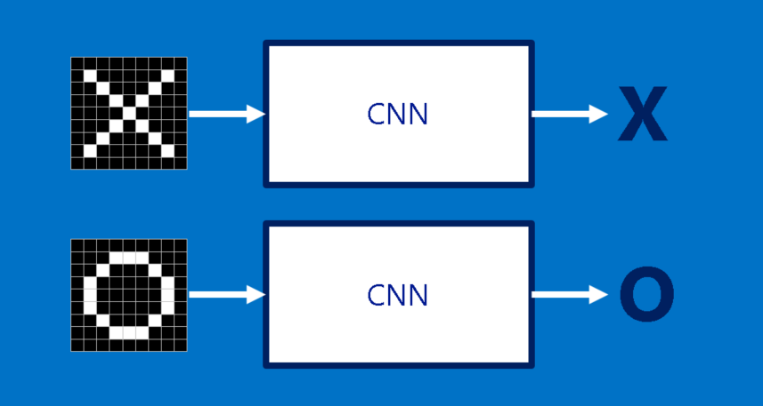To help guide our walk through a Convolutional Neural Network, we’ll stick with a very simplified example: determining whether an image is of an X or an O. This example is just rich enough to illustrate the principles behind CNNs, but simple enough to avoid getting bogged down in non-essential details. Our CNN has one job. Each time we hand it a picture, it has to decide whether it has an X or an O. It assumes there is always one or the other.

A naïve approach to solving this problem is to save an image of an X and an O and compare every new image to our exemplars to see which is the better match. What makes this task tricky is that computers are extremely literal. To a computer, an image looks like a two-dimensional array of pixels (think giant checkerboard) with a number in each position. In our example a pixel value of 1 is white, and -1 is black. When comparing two images, if any pixel values don’t match, then the images don’t match, at least to the computer. Ideally, we would like to be able to see X’s and O’s even if they’re shifted, shrunken, rotated or deformed. This is where CNNs come in.
Features, a.k.a Filters

CNNs compare images piece by piece. The pieces that it looks for are called features. By finding rough feature matches in roughly the same positions in two images, CNNs get a lot better at seeing similarity than whole-image matching schemes.

Each feature is like a mini-image—a small two-dimensional array of values. Features match common aspects of the images. In the case of X images, features consisting of diagonal lines and a crossing capture all the important characteristics of most X’s. These features will probably match up to the arms and center of any image of an X.
Convolution
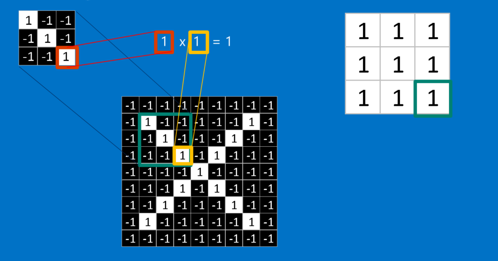When presented with a new image, the CNN doesn’t know exactly where these features will match so it tries them everywhere, in every possible position. In calculating the match to a feature across the whole image, we make it a filter. The math we use to do this is called convolution, from which Convolutional Neural Networks take their name.
The math behind convolution is nothing that would make a sixth-grader uncomfortable. To calculate the match of a feature to a patch of the image, simply multiply each pixel value in the feature by the value of the corresponding pixel in the image. Then add up the answers and divide by the total number of pixels in the feature. If both pixels are white (a 1) then 1 * 1 = 1. If both are black, then (-1) * (-1) = 1. Either way, a matching pixel results in a 1. Similarly, any mismatch is a -1. If all the pixels in a 3x3 pixel feature match, then adding them up and dividing by the total number of pixels gives a 1. Similarly, if none of the pixels in a feature match the image patch, then the answer is a -1.
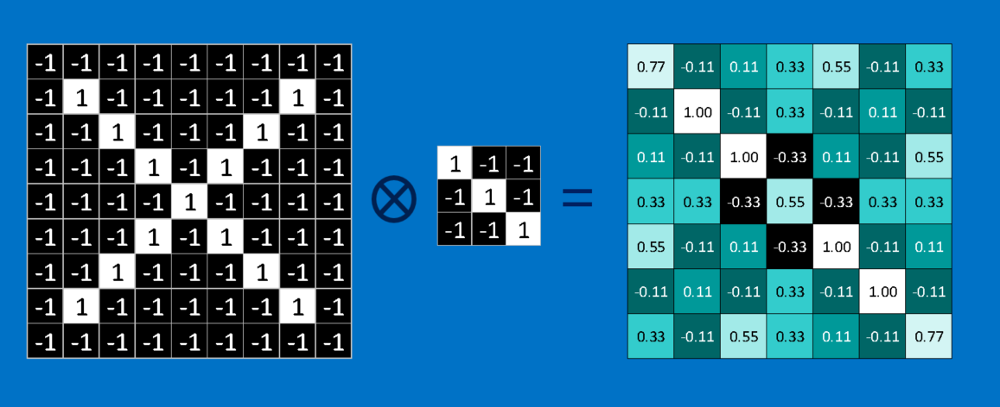To complete our convolution, we repeat this process, lining up the feature with every possible image patch. We can take the answer from each convolution and make a new two-dimensional array from it, based on where in the image each patch is located. This map of matches is also a filtered version of our original image. It’s a map of where in the image the feature is found. Values close to 1 show strong matches, values close to -1 show strong matches for the photographic negative of our feature, and values near zero show no match of any sort.
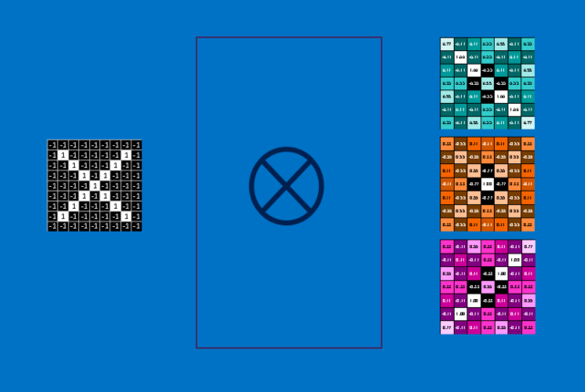The next step is to repeat the convolution process in its entirety for each of the other features. The result is a set of filtered images, one for each of our filters. It’s convenient to think of this whole collection of convolutions operations as a single processing step. In CNNs this is referred to as a convolution layer, hinting at the fact that it will soon have other layers added to it.
It’s easy to see how CNNs get their reputation as computation hogs. Although we can sketch our CNN on the back of a napkin, the number of additions, multiplications and divisions can add up fast. In math speak, they scale linearly with the number of pixels in the image, with the number of pixels in each feature and with the number of features. With so many factors, it’s easy to make this problem many millions of times larger without breaking a sweat. Small wonder that microchip manufacturers are now making specialized chips in an effort to keep up with the demands of CNNs.
Pooling
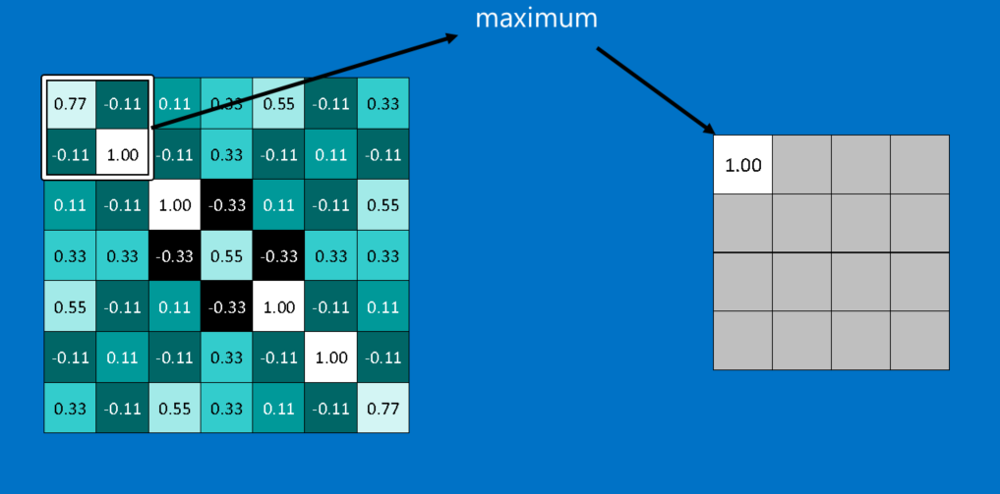Another power tool that CNNs use is called pooling. Pooling is a way to take large images and shrink them down while preserving the most important information in them. The math behind pooling is second-grade level at most. It consists of stepping a small window across an image and taking the maximum value from the window at each step. In practice, a window 2 or 3 pixels on a side and steps of 2 pixels work well.
After pooling, an image has about a quarter as many pixels as it started with. Because it keeps the maximum value from each window, it preserves the best fits of each feature within the window. This means that it doesn’t care so much exactly where the feature fit as long as it fit somewhere within the window. The result of this is that CNNs can find whether a feature is in an image without worrying about where it is. This helps solve the problem of computers being hyper-literal.
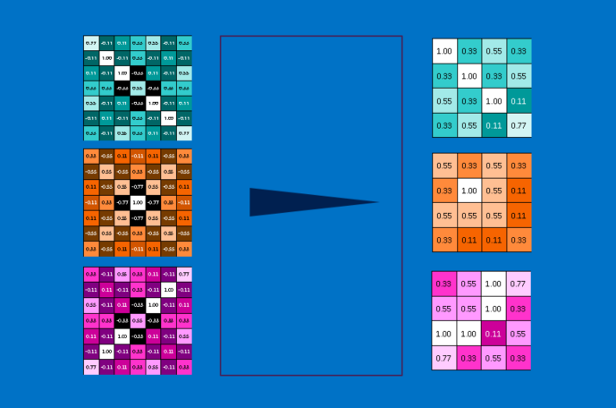A pooling layer is just the operation of performing pooling on an image or a collection of images. The output will have the same number of images, but they will each have fewer pixels. This is also helpful in managing the computational load. Taking an 8 megapixel image down to a 2 megapixel image makes life a lot easier for everything downstream.
Rectified Linear Units
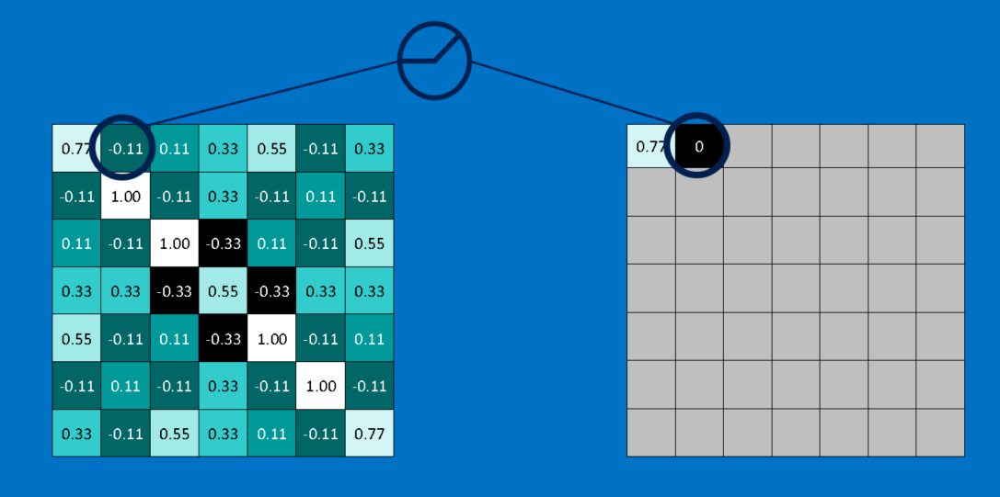A small but important player in this process is the ReLU. It’s math is also very simple—wherever a negative number occurs, swap it out for a 0. This helps the CNN stay mathematically healthy by keeping learned values from getting stuck near 0 or blowing up toward infinity. It’s the axle grease of CNNs—not particularly glamorous, but without it they don’t get very far.
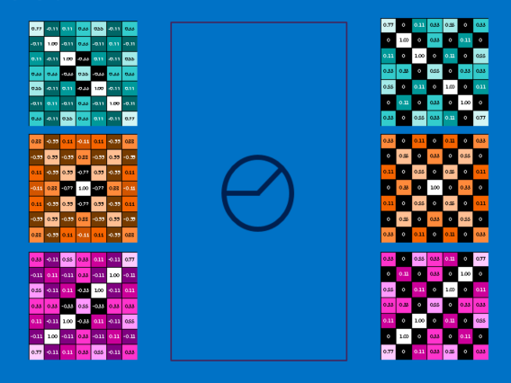The output of a ReLU layer is the same size as whatever is put into it, just with all the negative values removed.
Deep learning
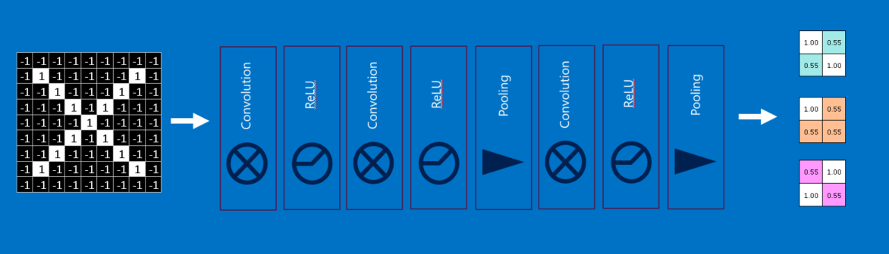You’ve probably noticed that the input to each layer (two-dimensional arrays) looks a lot like the output (two-dimensional arrays). Because of this, we can stack them like Lego bricks. Raw images get filtered, rectified and pooled to create a set of shrunken, feature-filtered images. These can be filtered and shrunken again and again. Each time, the features become larger and more complex, and the images become more compact. This lets lower layers represent simple aspects of the image, such as edges and bright spots. Higher layers can represent increasingly sophisticated aspects of the image, such as shapes and patterns. These tend to be readily recognizable. For instance, in a CNN trained on human faces, the highest layers represent patterns that are clearly face-like. (1)

Fully connected layers
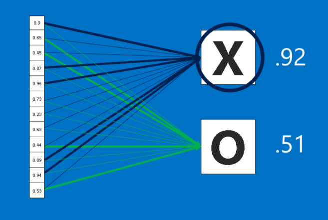CNNs have one more arrow in their quiver. Fully connected layers take the high-level filtered images and translate them into votes. In our case, we only have to decide between two categories, X and O. Fully connected layers are the primary building block of traditional neural networks. Instead of treating inputs as a two-dimensional array, they are treated as a single list and all treated identically. Every value gets its own vote on whether the current image is an X or and O. However, the process isn’t entirely democratic. Some values are much better than others at knowing when the image is an X, and some are particularly good at knowing when the image is an O. These get larger votes than the others. These votes are expressed as weights, or connection strengths, between each value and each category.
When a new image is presented to the CNN, it percolates through the lower layers until it reaches the fully connected layer at the end. Then an election is held. The answer with the most votes wins and is declared the category of the input.
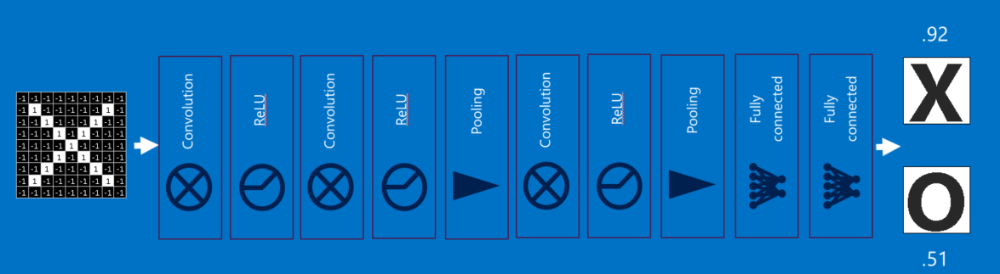Fully connected layers, like the rest, can be stacked because their outputs (a list of votes) look a whole lot like their inputs (a list of values). In practice, several fully connected layers are often stacked together, with each intermediate layer voting on phantom “hidden” categories. In effect, each additional layer lets the network learn ever more sophisticated combinations of features that help it make better decisions.
Backpropagation
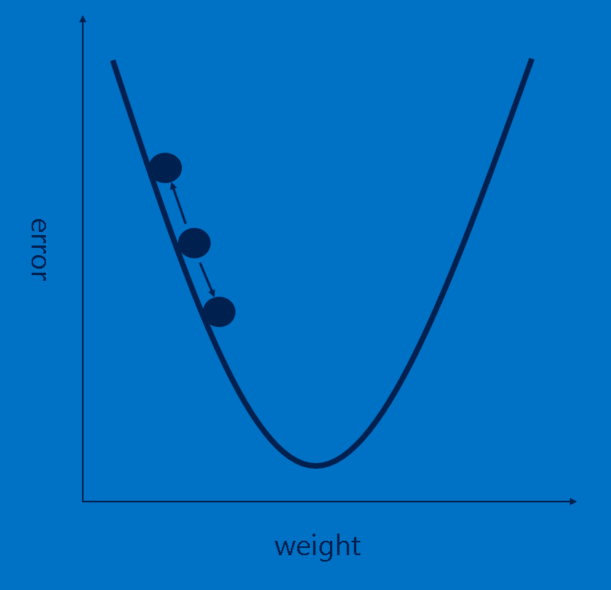Our story is filling in nicely, but it still has a huge hole—Where do features come from? and How do we find the weights in our fully connected layers? If these all had to be chosen by hand, CNNs would be a good deal less popular than they are. Luckily, a bit of machine learning magic called backpropagation does this work for us.
To make use of backpropagation, we need a collection of images that we already know the answer for. This means that some patient soul flipped through thousands of images and assigned them a label of X or O. We use these with an untrained CNN, which means that every pixel of every feature and every weight in every fully connected layer is set to a random value. Then we start feeding images through it, one after other.
Each image the CNN processes results in a vote. The amount of wrongness in the vote, the error, tells us how good our features and weights are. The features and weights can then be adjusted to make the error less. Each value is adjusted a little higher and a little lower, and the new error computed each time. Whichever adjustment makes the error less is kept. After doing this for every feature pixel in every convolutional layer and every weight in every fully connected layer, the new weights give an answer that works slightly better for that image. This is then repeated with each subsequent image in the set of labeled images. Quirks that occur in a single image are quickly forgotten, but patterns that occur in lots of images get baked into the features and connection weights. If you have enough labeled images, these values stabilize to a set that works pretty well across a wide variety of cases.
As is probably apparent, backpropagation is another expensive computing step, and another motivator for specialized computing hardware.
Hyperparameters
Unfortunately, not every aspect of CNNs can be learned in so straightforward a manner. There is still a long list of decisions that a CNN designer must make.
- For each convolution layer, How many features? How many pixels in each feature?
- For each pooling layer, What window size? What stride?
- For each extra fully connected layer, How many hidden neurons?
In addition to these there are also higher level architectural decisions to make: How many of each layer to include? In what order? Some deep neural networks can have over a thousand layers, which opens up a lot of possibilities.
With so many combinations and permutations, only a small fraction of the possible CNN configurations have been tested. CNN designs tend to be driven by accumulated community knowledge, with occasional deviations showing surprising jumps in performance. And while we’ve covered the building blocks of vanilla CNNs, there are lots of other tweaks that have been tried and found effective, such as new layer types and more complex ways to connect layers with each other.
Beyond images
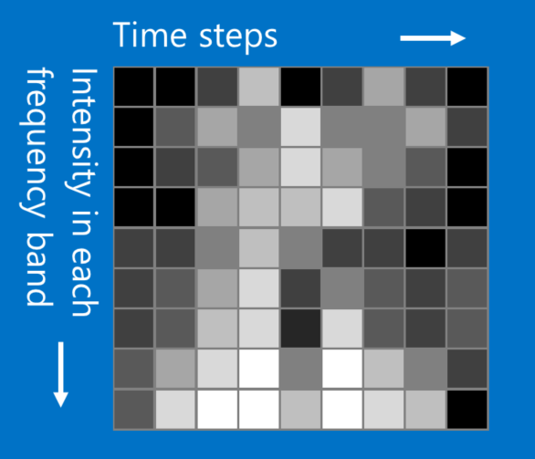While our X and O example involves images, CNNs can be used to categorize other types of data too. The trick is, whatever data type you start with, to transform it to make it look like an image. For instance, audio signals can be chopped into short time chunks, and then each chunk broken up into bass, midrange, treble, or finer frequency bands. This can be represented as a two-dimensional array where each column is a time chunk and each row is a frequency band. “Pixels” in this fake picture that are close together are closely related. CNNs work well on this. Researchers have gotten quite creative. They have adapted text data for natural language processing and even chemical data for drug discovery.
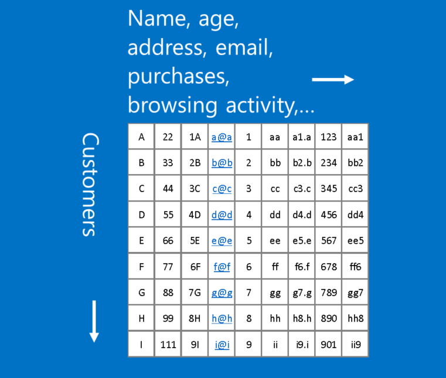An example of data that doesn’t fit this format is customer data, where each row in a table represents a customer, and each column represents information about them, such as name, address, email, purchases and browsing history. In this case, the location of rows and columns doesn’t really matter. Rows can be rearranged and columns can be re-ordered without losing any of the usefulness of the data. In contrast, rearranging the rows and columns of an image makes it largely useless.
A rule of thumb: If your data is just as useful after swapping any of your columns with each other, then you can’t use Convolutional Neural Networks.
However if you can make your problem look like finding patterns in an image, then CNNs may be exactly what you need.
Learn more
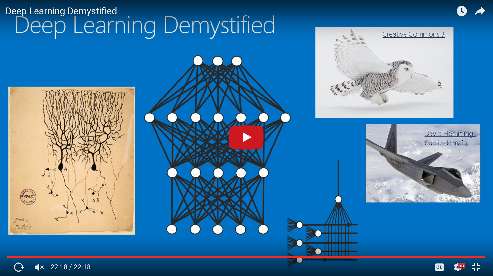If you'd like to dig deeper into deep learning, check out my Demystifying Deep Learning post. I also recommend the notes from the Stanford CS 231 course by Justin Johnson and Andrej Karpathy that provided inspiration for this post, as well as the writings of Christopher Olah, an exceptionally clear writer on the subject of neural networks.
If you are one who loves to learn by doing, there are a number of popular deep learning tools available. Try them all! And then tell us what you think.
I hope you've enjoyed our walk through the neighborhood of Convolutional Neural Networks. Feel free to start up a conversation publicly or in a personal message.
Brandon
@_brohrer_
Facebook
LinkedIn
August 17, 2016
If you found this helpful, I also recommend the
Data Science and Robots Blog.
I work at Microsoft, but my opinions are my own.
(1) Convolutional Deep Belief Networks for Scalable Unsupervised Learning of Hierarchical Representations, Honglak Lee, Roger Grosse, Rajesh Ranganath, Andrew Y. Ng